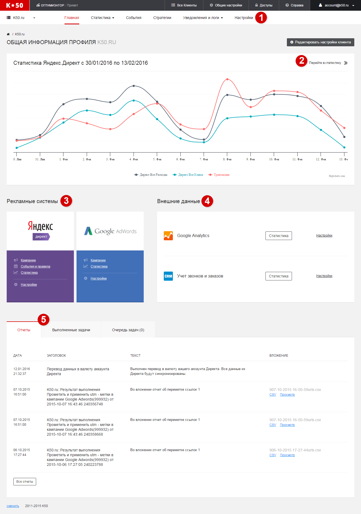

Главная страница
С данной страницы начинается подключение всех сервисов оптимизатора. Страницу можно разбить на несколько блоков

1Панель навигации
Данная панель позволяет быстро перейти во все необходимые разделы.
| Раздел | Описание |
|---|---|
| Статистика | Данный раздел позволяет работать со статистикой рекламных систем |
| События | Данный раздел позволяет настроить правила и события для автоматического выполнения определённых задач |
| Стратегии | В данном разделе можно настроить стратегию оптимизации ставок по RPV (revenue per visit) |
| Уведомления и логи | В данном разделе хранится информация о всех созданных отчетах и выполненных действиях пользователями. |
| Настройки | В данном разделе хранятся системные настройки оптимизатора (выполнение периодических задач, режимы скачивания данных и пр.) |
2Диаграмма с основными показателями
Данная диаграмма отображает основные показатели за последние 14 дней. Из диаграммы возможен переход в статистику.
3Виджет с рекламными системами
Из данного виджета производится подключение и настрока рекламных систем.
4Виджет с внешними источниками данных
Из данного виджета производится подключение и настрока внешних источников данных.
5Информационная панель
Данная панель предназначена для быстрой проверки активности оптимизатора.
Панель имеет следующие вкладки
| Вкладка | Описание |
|---|---|
| Отчеты | Отображает 5 последних сформированных отчетов для пользователя. Больше отчетов доступно в разделе Уведомления и отчеты |
| Выполненные задачи | Вывовдит список последних выполненных задач оптимизатором. Полезен для отладки работы клиента. |
| Очередь задач | Отображает список запланированных оптимизатором задач. Наличие задачи в очереди подразумевает, что она должна выполниться в ближайшее время. |